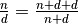

Square root convergents¶
Problem 57
It is possible to show that the square root of two can be expressed as an infinite continued fraction.
sqrt(2) = 1 + 1/(2 + 1/(2 + 1/(2 + ... ))) = 1.414213...
By expanding this for the first four iterations, we get:
1 + 1/2 = 3/2 = 1.5
1 + 1/(2 + 1/2) = 7/5 = 1.4
1 + 1/(2 + 1/(2 + 1/2)) = 17/12 = 1.41666...
1 + 1/(2 + 1/(2 + 1/(2 + 1/2))) = 41/29 = 1.41379...
The next three expansions are 99/70, 239/169, and 577/408, but the eighth expansion, 1393/985, is the first example where the number of digits in the numerator exceeds the number of digits in the denominator.
In the first one-thousand expansions, how many fractions contain a numerator with more digits than denominator?
Solution
We’ll use euler04.digits(). Plus, we’ll use the numbers
module so that we can define our own rational fraction.
We should use fractions.Fraction for this.
from euler04 import digits
Bad Idea¶
Here’s a fairly bad design based on reducing fractions.
import numbers
Our own class of Rational fractions.
class Rational:
def __init__( self, n, d=1 ):
if isinstance(n, numbers.Integral) and isinstance(d, numbers.Integral):
self.n= n
self.d= d
elif isinstance(n, Rational) and isinstance(d, numbers.Integral):
self.n= n.n
self.d= n.d*d
elif isinstance(n, numbers.Integral) and isinstance(d, Rational):
self.n= d.d*n
self.d= d.n
else:
raise TypeError( "Can't make Rational(%r,%r)" % (n,d) )
self.reduce()
@staticmethod
def _gcd( p, q ):
# Rewritten as a clumsy-looking set of loops to avoid recursion limit.
while p != q:
if p > q:
while p > q:
p -= q
else:
while q > p:
q -= p
p, q = q, p
return p
def reduce( self ):
if self.n == 1 or self.d == 1:
return
nn, r = divmod( self.n, self.d )
if r == 0:
self.n= nn
self.d= 1
nd, r = divmod( self.d, self.n )
if r == 0:
self.n= 1
self.d= nd
# Recursion Depth Issue...
gcd= self._gcd( self.n, self.d )
if gcd != 1:
self.n= self.n // gcd
self.d= self.d // gcd
def __add__( self, other ):
if type(other) != Rational:
other= Rational(other)
n = self.n*other.d + other.n*self.d
d = self.d * other.d
return Rational( n, d )
def __radd__( self, other ):
if type(other) != Rational:
other= Rational(other)
return self.__add__( other )
def __mul__( self, other ):
if type(other) != Rational:
other= Rational(other)
n = self.n*other.n
d = self.d*other.d
return Rational( n, d )
def __rmul__( self, other ):
if type(other) != Rational:
other= Rational(other)
return self.__mul__( other )
def __float__( self ):
return float(self.n)/self.d
def __str__( self ):
if self.d == 1:
return str(self.n)
return "%d/%d" % ( self.n, self.d )
def tuple( self ):
return ( self.n, self.d )
def __int__( self ):
if self.d == 1:
return self.n
else:
raise ValueError( "Value is %s, which is not an integer" % ( self ) )
def testRational():
assert "1/2" == str(Rational(1,2))
assert 0.5 == float(Rational(1,2))
assert "2/3" == str(Rational(1,3)*2)
assert "1" == str(Rational(1,3)*3)
assert "4/3" == str(Rational(1,3)*4)
assert "1/3" == str(Rational(4,12))
assert "4/3" == str(Rational(1,3)+Rational(1))
assert "2" == str(Rational(4,3)+Rational(2,3))
assert "1/6" == str(Rational( Rational(1,3), 2 ))
assert "6" == str(Rational( 2, Rational(1,3) ))
assert 1.5 == float( 1 + Rational(1,2) )
assert 1.4 == float( 1 + Rational(1,2+Rational(1,2)))
assert "7/5" == str( 1 + Rational(1,2+Rational(1,2)))
assert (7,5) == (1 + Rational(1,2+Rational(1,2))).tuple()
try:
int( Rational(1,3) )
except ValueError as e:
assert e.args[0] == "Value is 1/3, which is not an integer"
assert 5 == int( Rational(10,2) )
assert "3/2" == str( 1+Rational(1,genTerm(0)) )
assert "7/5" == str( 1+Rational(1,genTerm(1)) )
assert "17/12" == str( 1+Rational(1,genTerm(2)) )
assert "41/29" == str( 1+Rational(1,genTerm(3)) )
assert "99/70" == str( 1+Rational(1,genTerm(4)) )
assert "239/169" == str( 1+Rational(1,genTerm(5)) )
assert "577/408" == str( 1+Rational(1,genTerm(6)) )
assert "1393/985" == str( 1+Rational(1,genTerm(7)) ) # the eighth expansion,
n, d = ( 1+Rational(1,genTerm(7)) ).tuple()
assert len(digits(n)) > len(digits(d))
Given the working Rational fractions, we can generate terms.
def genTerm( depth ):
# Also runs afoul of the Python recursion limit :-(
if depth == 0:
return Rational(2)
else:
return 2+Rational(1,genTerm(depth-1))
Here’s where we try to compute the answer. Slowly.
def lame():
"""Values get HUGE! and hard to reduce."""
count= 0
for i in range(1000):
n, d = ( 1+Rational(1,genTerm(i)) ).tuple()
if len(digits(n)) > len(digits(d)):
print( i+1, n, d )
return count
Good Idea¶
This is a much better design. It’s based on a simple observation about the continued fractions being used. We have .
def genTermSimple():
"""
>>> from euler57 import genTermSimple
>>> g= genTermSimple()
>>> next(g)
(0, 3, 2)
>>> next(g)
(1, 7, 5)
>>> next(g)
(2, 17, 12)
>>> next(g)
(3, 41, 29)
>>> next(g)
(4, 99, 70)
>>> next(g)
(5, 239, 169)
>>> next(g)
(6, 577, 408)
>>> next(g)
(7, 1393, 985)
"""
n, d = 1, 1
for i in range(1000):
n, d = n+d+d, n+d
yield i, n, d
Test the module components.
def test():
import doctest
doctest.testmod(verbose=0)
testRational()
Compute the answer.
def answer():
count= 0
for i, n, d in genTermSimple():
if len(digits(n)) > len(digits(d)):
count += 1
return count
Confirm the answer.
def confirm(ans):
assert ans == 153, "{0!r} Incorrect".format(ans)
Create some output.
if __name__ == "__main__":
test()
ans= answer()
#ans= lame()
confirm(ans)
print( "The number of fractions which contain a numerator"
" with more digits than denominator:", ans )